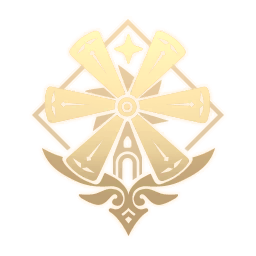

<!DOCTYPE html>
<!-- подключение словаря,RDFa -->
<html lang="en" xmlns:dc="http://purl.org/dc/elements/1.1/" xmlns:xsd="http://www.w3.org/2001/XMLSchema"></html>
<head>
    <meta charset="utf-8">
    <title>База данных</title>
    <link href="Styles.css" rel="stylesheet">
    <link href="Table.css" rel="stylesheet">
    <link rel="shortcut icon" href="images/Emblem_Serenitea_Pot.png" type="image/png">
</head>
<!-- словарь, который по умолчанию будет использоваться в аннотациях,RDFa -->
<!-- Так же использую микроформат hCard-->
<body class="vcard" vocab="http://schema.org/">
    <header role="banner">
        <div></div>
        <!-- название организации, микроформат hCard -->
        <div><span class="fn org" style="margin-right: 30px;">GenshinImpactFAN</span></div>
        <div></div>
    </header>
    <!-- Навигационное меню-->
    <nav class="menu">
        <a rel="foaf:topic" class="main" href="home.html"><li>Главная</li></a>
        <a rel="foaf:topic" class="table" href="table.html"><li>Таблица</li></a>
        <a rel="foaf:topic" class="about" href="about.html"><li>Об авторе</li></a>
    </nav>
    <!-- основное содержимое -->
    <article class="content">
        <h1 style="text-align: center;">Регионы в игре</h1>
        <form class="tabs">
            <div>
                <input type="radio" name="tabs" id="tab-1" checked>
                <label for="tab-1">Мондштадт</label>
                <table style="color:cyan" cellpadding="5" class="tab-content">
                    <tr>
                        <th>Изображение</th>
                        <th>Название</th>
                        <th>Описание</th>
                    </tr>
                    <tr>
                        <td></td>
                        <td>Мондштадт</td>
                        <td><p>Мондштадт (нем. Mondstadt Мондстадт, «Лунный город») — один из семи регионов Тейвата и первый, куда Путешественник прибывает в поисках своего потерянного родственника. Это город-государство, который поклоняется Анемо Архонту Барбатосу.
                            В Мондштадте, с самого его основания, ежегодно проводится фестиваль под названием Луди Гарпастум — праздник песен, вина и полёта, длящийся 15 дней.
                            Две тысячи шестьсот лет назад народ Мондштадта был разделен между двумя соперничающими силами: Королем Штормов, Анемо Архонтом Декарабианом, и Королем Севера, Андриусом. Андриус не мог повредить башню Декарабиана, которая была защищена свирепыми штормами. 
                            В то время как Декарабиан защищал свой народ, он не давал им свободы; они не могли пройти через ветряные потоки, окружавшие город. 
                        </p></td>
                    </tr>
                </table>
            </div>
            <div>
                <input type="radio" name="tabs" id="tab-2">
                <label for="tab-2">Ли Юэ</label>
                <table style="color:#FF8C00" cellpadding="5" class="tab-content">
                    <tr>
                        <th>Изображение</th>
                        <th>Название</th>
                        <th>Описание</th>
                    </tr>
                    <tr>
                        <td></td>
                        <td>Ли Юэ</td>
                        <td><p>Ли Юэ (кит. 璃月 Líyuè, «Стеклянная луна») — одно из семи королевств Тейвата. Это страна поклоняющаяся Гео Архонту Мораксу или же Властелину Камня, как его называют сами жители Ли Юэ.Ландшафт Ли Юэ формируют гордо возвышающиеся скалистые горы и каменные леса, обширные равнины и оживлённые побережья. 
                            Климат этих земель круглый год переливается пёстрыми цветами и красками. </p></td>
                    </tr>
                </table>
            </div>
            <div>
                <input type="radio" name="tabs" id="tab-3">
                <label for="tab-3">Инадзума</label>
                <table style="color:#EE82EE" cellpadding="5" class="tab-content">
                    <tr>
                        <th>Изображение</th>
                        <th>Название</th>
                        <th>Описание</th>
                    </tr>
                    <tr>
                        <td></td>
                        <td>Инадзума</td>
                        <td><p>Инадзума (яп. 稲妻 Inazuma, «Молния») – одно из семи королевств Тейвата. Это страна, которая поклоняется Электро Архонту Сёгуну Райдэн, Вельзевул, и лидеру руководящей страной группировки, Бакуфу Инадзумы.
                            Жители Инадзумы не совсем дружелюбно относятся к обладателям Глаза Бога из-за приказа об «охоте на Глаза Бога», данного Архонтом Бакуфу Инадзумы, Баал. Приказ был издан для того, чтобы собрать все Глаза Бога.</p></td>
                    </tr>
                </table>
            </div>
        </form>
    </article>
    <footer class="wrap_footer">
        <!-- Автор-->
        <p class="footer-block">© <span property="dc:creator">Отчик Владислав</span></p>
        <!-- Создание сайта-->
        <p><span property="dc:date">22 октября 2021</span></p>
        <!-- Версия сайта -->
        <p class="footer-block">Version: 2.0</p>
    </footer>
</body>
</html>